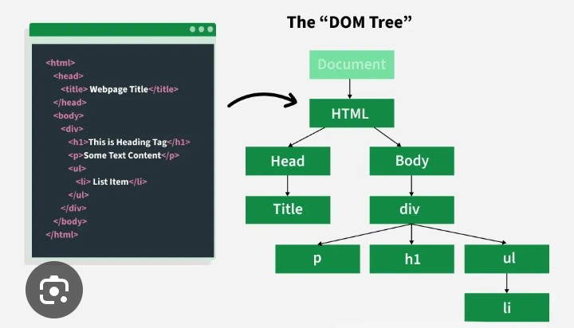
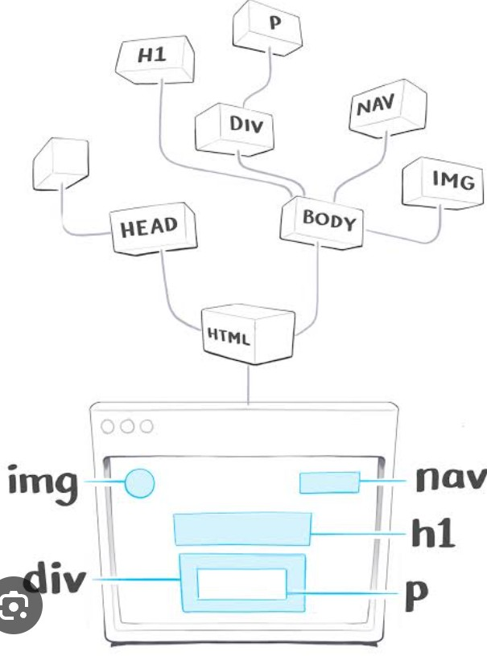
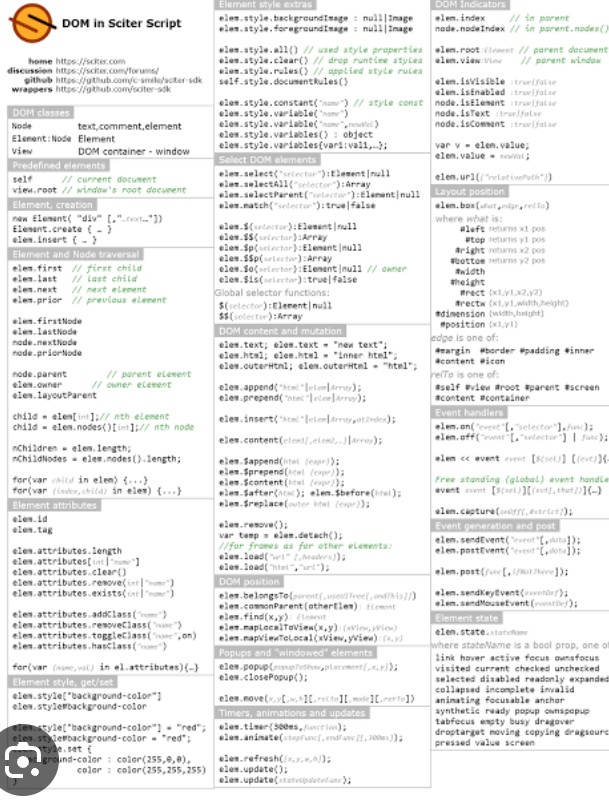

The Document Object Model, commonly known as the DOM, is one of the most important concepts in JavaScript. It allows developers to access, modify, create, and delete HTML elements dynamically. Without the DOM, web pages would remain static and users would not be able to interact with them. Every modern website, from simple portfolios to large social media platforms, relies on the DOM to provide an interactive user experience.
When a browser loads an HTML page, it automatically converts every HTML element into a tree-like structure called the Document Object Model. JavaScript can then communicate with this structure to update text, change styles, respond to button clicks, validate forms, display animations, and much more.

The DOM is a programming interface that represents every HTML element as an object. Because every element becomes an object, JavaScript can easily access and modify it whenever necessary.
For example, a heading, paragraph, button, image, or input field can all be selected and changed using JavaScript. This allows websites to react instantly without reloading the page.
The DOM is responsible for making websites interactive. Without it, users would only be able to read static content. JavaScript uses the DOM to respond to user actions and update web pages in real time.
Before changing an element, JavaScript must first select it. There are several methods available for selecting HTML elements.
document.getElementById("title")
Select an element by its ID.
document.getElementsByClassName("card")
Select all elements with the same class.
document.getElementsByTagName("p")
Select all paragraph elements.
document.querySelector(".box")
Select the first matching element.
document.querySelectorAll(".box")
Select all matching elements.
One of the simplest DOM operations is changing text on a webpage.
Hello
Output:
Welcome to JavaScript

JavaScript can also modify CSS properties dynamically. This makes websites more interactive and visually appealing.
document.getElementById("title").style.color = "green";
document.getElementById("title").style.fontSize = "40px";
Whenever this code runs, the heading color and font size change immediately.
Imagine a dark mode button on a website. When the visitor clicks the button, JavaScript uses the DOM to change the background color, text color, and other styles instantly. The page updates without refreshing, creating a smooth user experience. This is one of the many practical uses of the Document Object Model.
Events are actions that occur on a webpage. These actions may be performed by the user or the browser. JavaScript listens for these events and executes specific code when they happen. Events make websites interactive and responsive.
Some common DOM events include:
Whenever the button is clicked, JavaScript displays an alert message.
Professional developers usually use addEventListener() instead of inline events because it keeps HTML and JavaScript separate, making code cleaner and easier to maintain.
This method is considered a best practice in modern JavaScript development.
JavaScript can create new HTML elements dynamically. This allows developers to add content without refreshing the webpage.
let heading = document.createElement("h2");
heading.innerHTML = "New Heading";
document.body.appendChild(heading);
The new heading appears instantly after the page loads.
Elements can also be removed from the webpage whenever they are no longer needed.
let element = document.getElementById("box");
element.remove();
This permanently removes the selected element from the page.
JavaScript can update HTML attributes such as image sources, links, placeholders, and IDs.
document.getElementById("image")
.src = "images/profile.jpg";
This changes the displayed image without reloading the page.
Form validation is one of the most common uses of the DOM. JavaScript checks user input before sending data to the server.
let username =
document.getElementById("username").value;
if(username == ""){
alert("Please enter your name.");
}
This prevents users from submitting empty forms.
DOM traversal means moving between parent, child, and sibling elements. This helps developers access related elements efficiently.
let parent =
document.getElementById("item").parentElement;
let child =
document.getElementById("list").firstElementChild;
DOM traversal is especially useful in large web applications with complex layouts.
Imagine an online shopping cart. When a customer clicks the Add to Cart button, JavaScript instantly updates the cart, changes the total price, and increases the number of selected products without refreshing the page. All of these actions are performed using the Document Object Model, creating a fast and smooth shopping experience.
Writing clean and organized DOM code is very important in professional web development. Developers should avoid repeating the same code, select elements efficiently, and separate JavaScript from HTML whenever possible. Using modern methods such as querySelector() and addEventListener() makes applications easier to maintain and improves readability.
JavaScript provides many built-in methods for interacting with HTML elements. Learning these methods will help you build dynamic websites more efficiently.
document.getElementById() document.querySelector() document.querySelectorAll() document.createElement() appendChild() remove() setAttribute() classList.add() classList.remove() classList.toggle()
These methods are frequently used in almost every JavaScript project.
Instead of changing CSS styles one by one, developers usually add or remove CSS classes using the classList property.
let box = document.getElementById("box");
box.classList.add("active");
box.classList.remove("active");
box.classList.toggle("dark");
This approach keeps styling inside CSS while JavaScript controls only the behavior.
The following example changes the webpage background color whenever the user clicks a button.
This simple project demonstrates how JavaScript interacts with the DOM to create an interactive user experience.
The DOM is used in almost every modern website and web application. Social media platforms update notifications instantly, online stores refresh shopping carts, educational websites display quiz results, banking systems validate forms, and portfolio websites create animations using DOM manipulation. Without the DOM, these interactive features would not be possible.
A strong understanding of the DOM is essential for frontend web development. It is also required before learning popular JavaScript frameworks such as React, Vue.js, and Angular.
The Document Object Model is one of the most important topics in JavaScript because it connects JavaScript with HTML and CSS. By learning how to select elements, handle events, create new content, modify styles, and validate forms, developers can build fast, interactive, and user-friendly websites. Mastering the DOM also prepares you for advanced frontend frameworks such as React, Vue.js, and Angular. Regular practice through small projects will strengthen your understanding and help you become a confident frontend developer.
